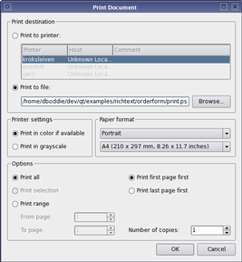

| Home · All Classes · Main Classes · Grouped Classes · Modules · Functions |
The QPrintDialog class provides a dialog for specifying the printer's configuration. More...
#include <QPrintDialog>
Inherits QAbstractPrintDialog.
The QPrintDialog class provides a dialog for specifying the printer's configuration.
The dialog allows users to change document-related settings, such as the paper size and orientation, type of print (color or grayscale), range of pages, and number of copies to print.
Controls are also provided to enable users to choose from the printers available, including any configured network printers.
Typically, QPrintDialog objects are constructed with a QPrinter object, and executed using the exec() function.
QPrintDialog printDialog(printer, parent);
if (printDialog.exec() == QDialog::Accepted) {
// print ...
}
If the dialog is accepted by the user, the QPrinter object is correctly configured for printing.
 |
| A printer dialog in Plastique style |
On Windows and Mac OS X, the native print dialog is used, which means that some QWidget and QDialog properties set on the dialog won't be respected.
See also QPageSizeDialog and QPrinter.
Constructs a new modal printer dialog for the given printer with the given parent.
Destroys the object and frees any allocated resources. Does not delete the associated QPrinter object.
| Copyright © 2006 Trolltech | Trademarks | Qt 4.1.1 |